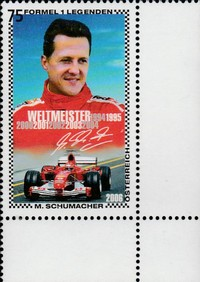
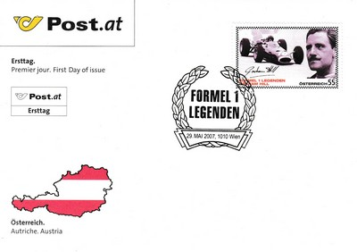

Austria
 |
 Issue date: 29th May 2007 Phil Hill: Hill drove in F1 from 1958 to 1966, driving for 8 different teams using a variety of chassis, he won the drivers championship in 1961 driving for Ferrari in the 156. Clay Regazzoni: Regazzoni drove in F1 from 1970 to 1980, driving for a variety of teams; he spent 6 seasons with Ferrari, who provided his best result - 2nd place in the drivers championship in 1974 in the 312B3. Regazzoni also provided Williams with their first ever win at the British Grand Prix in 1979 driving the FW07. Gerhard Berger: Berger drove in F1 from 1984 to 1997, driving for ATS, Arrows, Benetton, Ferrari and McLaren. Juan Manuel Fangio: The Argentinean is one of the most successful drivers in the history of international motor racing. Starting in 51 Grand Prix races, he won 24 times, a performance that has never been equalled. His 5 drivers championships remained the record for 46 years, before being beaten by Michael Schumacher in 2003. John Surtees: Surtees is the only person to become world champion on two and four wheels. He drove in F1 from 1960 to 1972 for a variety of teams. In 1964 he won the drivers championship with Ferrari in the 158. Mika Hakkinen: Hakkinen drove in F1 from 1991 to 2001, the first 2 seasons were with Lotus and the other 9 were with McLaren. Hakkinen won the drivers championship in 1998 and 1999. Michael Schumacher. Graham Hill: Hill drove in F1 from 1958 to 1975 for a variety of teams and with various chassis. He won the drivers title twice, first in 1962 with the Owen Racing Organisation driving a BRM P57 and then with Lotus in the Lotus 49. Emerson Fittipaldi: Fittipaldi drove in F1 from 1970 to 1980, first with Lotus, then McLaren and finally his own team. He won the drivers title twice, first in 1972 with Lotus in the 72D and then in 1974 with McLaren in the M23.  Issue date: 7th June 2006 Jim Clark: Clark raced in F1 from 1960 until his tragic death on 7th April 1968 - his Lotus 48 veered off the track and crashed into the trees on the 5th lap of a Formula Two race at the Hockenheimring. He drove exclusively for Lotus and won the drivers title in 1963 and 1965. Bruce McLaren: McLaren raced in F1 from 1958 to 1970; from 1958 to 1965 McLaren raced for Cooper, his best result coming in 1962 when he came 3rd in the drivers championship. In 1965 McLaren established his own team, again his best result was 3rd place in the drivers championship in 1969 in the M7C which was powered by the Cosworth V8. Stirling Moss: Moss drove in F1 from 1951 to 1961, he drove for a variety of teams in a number of different chassis. His best result came in 1955, 1956, 1957 and 1958 when he was runner up in the drivers championship in 4 consecutive years (in these 4 years he drove a Mercedes W196, a Maserati 250F, a Vanwall 57 and a Cooper T43). Jack Brabham: Brabham raced in F1 from 1955 to 1970, driving for Cooper before establishing his own team in 1962; Brabham won the drivers title in 1959 and 1960 with Cooper and then again 1966. Jacky Ickx: Ickx drove in F1 from 1967 to 1979 driving for a variety of teams, his best results came early in his career. He was runner up in the drivers championship in 1969 driving a Brabham BT26A for Motor Racing Developments and again in 1970 driving a Ferrari 312B for Ferrari. Sir Jackie Stewart: Stewart drove in F1 from 1965 to 1973, first with Owen Racing Organisation (using the BRM P261, P83 and P115 chassis), then with Matra (MS9, MS10, MS80) and finally with Tyrrell. He won the drivers title 3 times in 1969 (Matra MS80), 1971 and 1973 (Tyrrell). Mario Andretti: Andretti drove in F1 from 1968 to 1982 for a variety of teams, he finally won the drivers championship in 1978 with Lotus. Alain Prost: Prost drove in F1 from 1980 to 1993, for McLaren, Renault, Williams and Ferrari. He won the drivers championship 4 times: 1985 (McLaren MP4/2B), 1986 (McLaren MP4/2C), 1989 (McLaren MP4/5) and 1993 (Williams FW15C).  Issue date: 17th March 2009 In the 2008 season, Hamilton beat Massa by 1 point to the drivers championship, in a breathtaking finish to the Brazilian Grand Prix. Massa had won the race, at which point Hamilton was in 6th place giving Massa the title, but an overtake in the final corners gave Hamilton 5th place the and title. This meant that Hamilton had clinched the 2008 Formula One World Championship, becoming the youngest driver to win the title, as well as the first black driver. He is also the first British driver to win the World Championship since Damon Hill triumphed in 1996.  Issue date: 27th May 2009 Wolfgang von Trips raced in F1 from 1956 until his death at the 1961 Italian Grand Prix (on 10th September) - his Ferrari collided with Jim Clark's Lotus, the Ferrari became airborne and crashed into the side barrier - 15 spectators were also killed. Von Trips drove mainly for Ferrari, in 1961 he was driving the 156 and 3rd place in the Italian Grand Prix would have secured him his first drivers title. Gilles Villeneuve drove in F1 from 1977 until his death in May 1982. Villeneuve started driving for McLaren in 1977, but switched to Ferrari towards the end of that season. Villeneuve remained with Ferrari for the rest of his F1 career. James Hunt drove in F1 from 1973 to 1979, first with Hesketh Racing (3 seasons), then with McLaren (3 seasons) and finally for Wolf Racing. Hunt won the drivers championship in 1976 driving the McLaren M23 by 1 point from Niki Lauda (the season that Lauda had his near fatal accident in Germany). Bernie Ecclestone started out as a competitor in the 500cc Formula 3 series in 1949, following an accident he left racing, but soon returned as a manager of drivers (which included Rindt). In 1972 he bought the Brabham team; he then went on to form the Formula One Constructors Associations with Williams, Champman, Mayer, Tyrrell and Mosley. He became chief executive of FOCA in 1978.  Issue date: 4th December 2006 While Schumacher was on the podium after winning the 2006 Italian Grand Prix, Ferrari issued a press release stating that he would retire from racing at the end of the 2006 season.  Issue date: 29th May 2007 Graham Hill: Hill drove in F1 from 1958 to 1975 for a variety of teams and with various chassis. He won the drivers title twice, first in 1962 with the Owen Racing Organisation driving a BRM P57 and then with Lotus in the Lotus 49.  Issue date: 17th March 2009 In the 2008 season, Hamilton beat Massa by 1 point to the drivers championship, in a breathtaking finish to the Brazilian Grand Prix. Massa had won the race, at which point Hamilton was in 6th place giving Massa the title, but an overtake in the final corners gave Hamilton 5th place the and title. This meant that Hamilton had clinched the 2008 Formula One World Championship, becoming the youngest driver to win the title, as well as the first black driver. He is also the first British driver to win the World Championship since Damon Hill triumphed in 1996. |